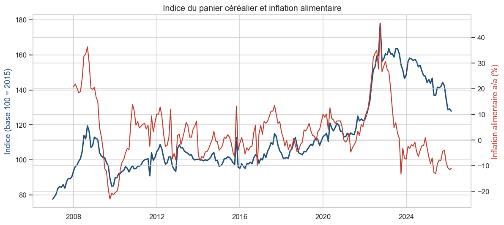
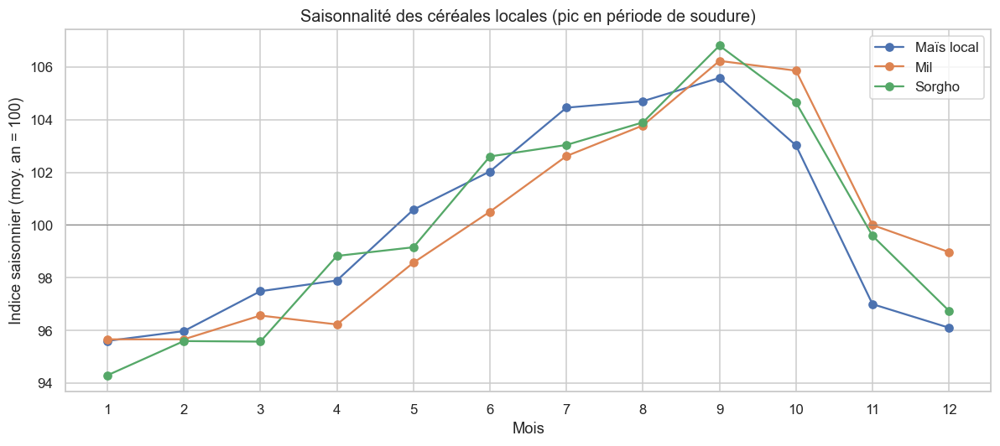
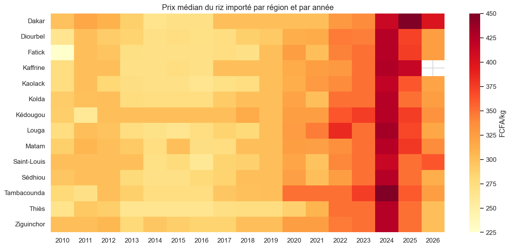
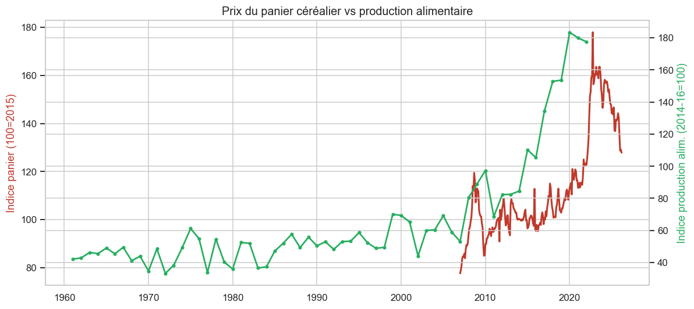

Projet Data Analytics sur données 100 % réelles : prix de marché du Programme Alimentaire Mondial (WFP) et macro de la Banque mondiale — 64 marchés, 14 régions, 2007–2026.
Calculés sur les relevés de prix réels 2007–2026.
scripts/download_data.py. Le panier-indice (base 100 = 2015)
est une construction méthodologique documentée.
Graphiques alimentés par les données réelles du projet.
Riz importé, mil, maïs local — chocs visibles en 2008 et 2022.
WFP (céréales) vs Banque mondiale — corrélation 0,91.
%.
Historique + prévision (meilleur modèle sélectionné par RMSE).
Indice du panier céréalier par région + localisation GPS des marchés WFP.



